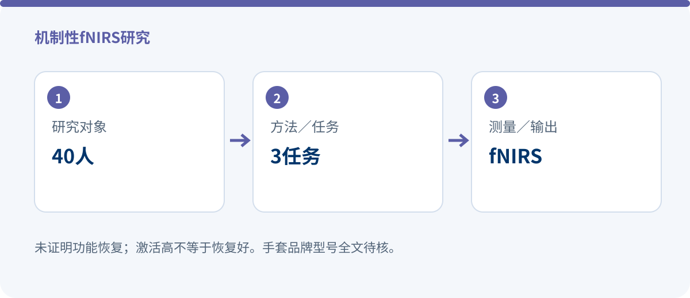

机制性fNIRS研究 · 2024
软体康复手套与VR场景：20名健康者与20名卒中患者的脑激活模式
机制性fNIRS研究
Brain Activation Pattern Caused by Soft Rehabilitation Glove and Virtual Reality Scenes: A Pilot fNIRS Study
P. Liu, X. Yang, F. Han, G. Peng, Q. Li, L. Huang, L. Wang, Y. Fan
IEEE Transactions on Neural Systems and Rehabilitation Engineering, 32, 3848–3857
DOI: 10.1109/TNSRE.2024.3482470 · 原始出处
证据范围：PubMed摘要、PMID与书目信息已核实；手套品牌型号仍需全文方法学复核，本文不凭主题推定为SYREBO。
fNIRS｜RA／VR／VRA三种任务｜非疗效试验
一句话结论：这是一项脑激活机制研究，不是临床功能疗效试验。20名健康受试者和20名卒中患者完成机器人手套辅助被动抓握、观看VR抓握视频、手套＋VR三种任务。VR与联合任务诱导更广泛的皮层激活，但不能据此写成已证明功能恢复。

研究设计
三种受控任务分别为：机器人手套辅助被动抓握（RA）、观看虚拟现实抓握视频（VR）、机器人手套与VR联合（VRA）。研究同步采集前额叶、运动皮层和枕叶的fNIRS信号，分析激活水平与功能连接。
研究问题聚焦不同感觉刺激条件下的脑活动模式，而非比较数周训练后的FMA、ARAT或日常生活能力。PMID：39418155。
40人20名健康＋20名卒中
3任务RA／VR／VRA
fNIRS前额叶／运动皮层／枕叶
核心结果
- 两组在VR和VRA任务中均出现更广泛皮层激活。
- 卒中组三种任务的平均皮层激活高于健康组，尤其在前额叶（摘要报告P<0.05）。
- 卒中组多数区域功能连接弱于健康组，但右侧部分区域显著更强。作者认为多感觉刺激具有促进更多脑区功能交流的潜力。
这项研究增加了什么信息？
对产品设计和康复方案讨论，这篇研究提供了“被动动作＋视觉场景”如何改变脑激活的机制线索。它支持继续研究多感觉训练，不支持直接承诺患者功能恢复或长期疗效。
研究边界：必须与结果一起阅读
- 先导机制研究，未以临床功能恢复为主要结局。
- 健康者与患者的激活差异可能包含代偿等多种解释，不能简单理解为“激活越高越好”。
- 手套品牌型号全文待核；当前不作为已确认SYREBO设备实验计数。
合规表述建议：这是一项脑激活机制研究，不是临床功能疗效试验。20名健康受试者和20名卒中患者完成机器人手套辅助被动抓握、观看VR抓握视频、手套＋VR三种任务。VR与联合任务诱导更广泛的皮层激活，但不能据此写成已证明功能恢复。
文章来源与核验范围
P. Liu, X. Yang, F. Han, G. Peng, Q. Li, L. Huang, L. Wang, Y. Fan. Brain Activation Pattern Caused by Soft Rehabilitation Glove and Virtual Reality Scenes: A Pilot fNIRS Study. IEEE Transactions on Neural Systems and Rehabilitation Engineering, 32, 3848–3857 (2024). DOI: 10.1109/TNSRE.2024.3482470.
设备名称、样本口径与数值结果均按上述已核实来源范围呈现；未取得的字段不作推断。
设备名称、样本口径与数值结果均按上述已核实来源范围呈现；未取得的字段不作推断。
本文为研究解读，不构成医疗建议。具体训练方案请在医生或治疗师指导下制定。